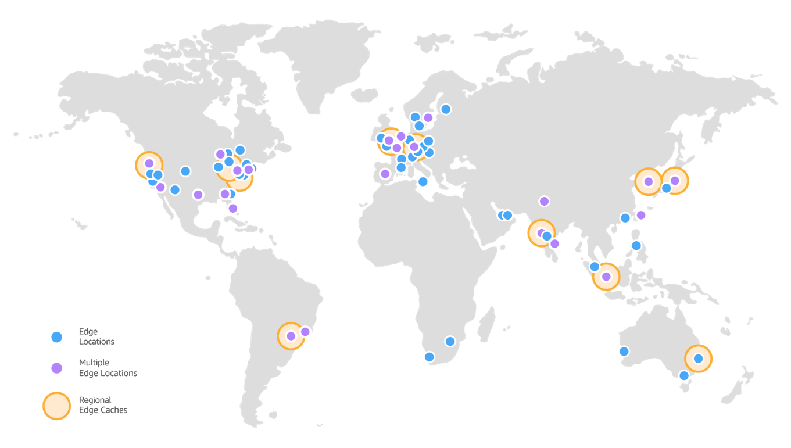

Uma Não-Gentil Introdução ao Stream Processing
- Júlio Biason
- https://functional.cafe/@juliobiason
- https://t.me/juliobiason
- julio.biason@pm.me
- http://presentations.juliobiason.net
Agenda:
- Processamento distribuído
- Batch Processing
- Programação Funcional
- Stream Processing
- (Big Data)
This is a CDN
This is a CDN
A AWS tem um limite máximo de 100.000 requisições/segundo.
CDN? Stream Processing?
- Os clientes são cobrados pelo tráfego que passa pela CDN.
- Queremos mostrar o consumo em tempo real.
- ... para todos os clientes.
- ...e os dados não páram de ser gerados.
CDN? Stream Processing?
Impossível guardar os 100.000 registros/segundo num banco de dados e fazer um SELECT pra ver o total.
Precisamos os dados "read ready".
"Read Ready"
Como resolver isso?
Poderíamos simplesmente ir somando o total
... se não tivéssemos várias máquinas processando.
Como resolver isso?
Poderíamos mandar todos os dados para um banco de dados e ir calculando e marcando esses como processados.
... se isso não significasse que o banco cresceria infinitamente.
... a não ser que registros antigos fosse apagados.
... que é o que serviços de mensageria fazem.
Message Brokers


Batch Processing
sudo cat /etc/shadow | cut -d ':' -f 2 | sort | uniq -c- Entrada: conteúdo do arquivo /etc/shadow
- Processamento: capturando o segundo campo separado por ":"
- Agrupamento: ordenamento dos dados (sort + uniq)
- Saída: total de duplicados (ainda uniq)
- Extract
- Transform
- Load
Batch processing seria o caso de processar os dados de um dia.
Se novos dados entrassem no total do dia, bastaria reprocessar os dados do dia.
ou do mês, ou do ano.


Programação Funcional
Buzzwords!
- Teoria das Categorias!
- Monads!
- Functors!

Funções Puras
Uma função é considerada pura se ela sempre retorna o mesmo resultado para os mesmos parâmetros.
def mult(a):
return a * 4mult(2)mult(2)class LightSwitch:
def __init__(self):
self.state = False
def switch(self):
self.state = not self.state
print(self.state)light = LightSwitch()
light.switch()light.switch()print()INSERT INTO table (value, value)random()"Idempotência"
Imutabilidade
Uma vez que o dado é gerado, ele nunca muda.
(Transparência referencial)

mapreduce(fold)filter
(map lambda iterable)(fold lambda iterable start)(filter lambda iterable)
map: transforma cada um dos elementos do iterador através do função lambda em uma nova lista.fold: converte todos os elementos da lista em um único valor, começando com um valor adicionar (por exemplo,sum).filter: remove elementos do iterador que não sejam verdadeiros pelo lambda e produz uma nova lista.
Stream Processing
sudo cat /etc/shadow | cut -d ':' -f 2 | sort | uniq -csudo cat [broker] | cut -d ':' -f 2 | sort | uniq -csudo cat [broker] | map | sort | uniq -csudo cat [broker] | map | foldsudo cat [broker] | map | foldsudo cat [broker] | map | foldsudo cat [broker] | map | foldsudo cat [broker] | map | foldsudo cat [broker] | map | foldsudo cat [broker] | map | group_by | foldsudo cat [broker] | map | group_by | foldsudo cat [broker] | map | group_by | foldsudo cat [broker] | map | group_by | foldsudo cat [broker] | map | group_by | fold

A Área


- https://functional.cafe/@juliobiason
- https://t.me/juliobiason
- julio.biason@pm.me
- http://presentations.juliobiason.net